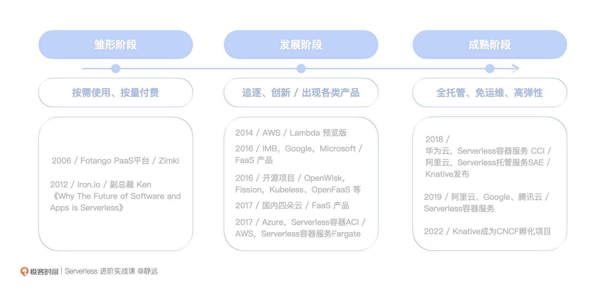

- 00 开篇词 Serverless是降本增效浪潮下的必然选择.md.html
- 00 思维构建 如何在新赛道下进阶Serverless能力？.md.html
- 01 生命周期：函数计算的基本流程是如何执行的？.md.html
- 02 触发器：如何构建事件源与函数计算的纽带？.md.html
- 03 高级属性：应对生产级别的应用，你需要掌握哪些技能？.md.html
- 04 冷启动：如何加快函数的第一次调用过程？.md.html
- 05 扩缩容：如何应对流量的波峰波谷？.md.html
- 06 流量转发：函数在不同情形下是如何执行的？.md.html
- 07 运行时（上）：不同语言形态下的函数在容器中是如何执行的？.md.html
- 08 运行时（下）：不同语言形态下的函数在容器中是如何执行的？.md.html
- 09 小试牛刀（一）：如何利用函数之间的调用解决业务问题？.md.html
- 10 小试牛刀（二）：如何突破VPC网络的速度限制？.md.html
- 11 WebIDE：如何让函数远离繁琐的本地开发模式？.md.html
- 12 编排：如何协调多任务的运行？.md.html
- 13 可观测（上）： 如何构建多维度视角下的Serverless监测体系？.md.html
- 14 可观测（下）： 如何构建多维度视角下的Serverless监测体系？.md.html
- 15 选型：不同阶段的数据应如何存储？.md.html
- 16 动手体验（一）：如何实现业务高效率地开发上线？.md.html
- 17 动手体验（二）：如何在云函数场景下实现一个有状态的服务？.md.html
- 18 实战指南：Serverless沙场老兵的一线使用经验.md.html
- 19 实战进阶（一）：Serverless “连接器” 的能力到底有多大？.md.html
- 20 实战进阶（二）：如何基于智能音箱开发一个BOT技能？.md.html
- 21 实战进阶（三）：传统的服务如何迁移到Serverless平台？.md.html
- 22 私有云：赛马时代的Serverless核心引擎谁能胜出？.md.html
- 23 实战进阶（四）：如何从0到1进阶一个开源引擎？.md.html
- 24 实战进阶（五）：如何从Serverless引擎蜕变成一个Serverless平台？.md.html
- 结束语 在实战中把握事物本质，不断革新.md.html
- 捐赠
00 思维构建 如何在新赛道下进阶Serverless能力？
你好，我是静远。
Serverless发展到现今，大部分的技术人已经对 Serverless 将引领云计算的下一个十年达成了共识。作为一名技术研发人员，“Serverless”对你来说大概率并不陌生，甚至，你已经在不知不觉中用上了，但是，它的快速发展也让我们很难对它形成一个较为全面的认知。
那么这节课，我们就一起了解Serverless的前世今生，重构Serverless思维，并选择一个具象化的Serverless形态作为切入点，开启后续的学习。最后，我也会和你探讨后续学习“升级打怪”的各个阶段，让我们的进阶目标更加清晰。
新赛道：Serverless的具象化表达
简单来说，Serverless是一种架构设计的理念，它不是一个具体的编程框架、类库或者工具。随着大家对于Serverless理解的深入，用词也越来越精准、具象。从之前“无服务器”的直译到目前“服务器无感知”的理解，是各界对Serverless这几年发展和使用的一个跨度的体现。
我们从头看一遍这个新赛道的发展历程。用Martin Fowler的观点来说，Serverless是FaaS和BaaS的组合，这个简单明了的定义，奠定了 Serverless 组成结构的基础。
CNCF在认定这个理念的同时，也在它的白皮书V1.0中对 Serverless 架构的定义有了进一步地完善描述，它指出：Serverless Computing 是构建和运行不需要服务器管理的应用程序。它描述了一种更细粒度的部署模型，将一个或多个功能的应用程序打包上传到Serverless平台，然后根据实际的需求，执行、扩展和计费。
我们发现，这个描述从执行路径和更细的角度进行了具象化的表述。
在2022年7月的云原生产业大会上，信通院发布的最新的云计算白皮书针对Serverless的描述中提到，“通过多种服务器无感知技术，将基础设施抽象成各种开箱即用的服务，以API接口的方式提供给用户按需调用，真正做到按需伸缩、按使用量收费”，又进一步从业务和基础设施服务的协作角度，凸显了Serverless的特性。
我沿用信通院白皮书的话来体现这种思想，也希望我们能够达成一个共识：“Serverless是能够实现业务和基础设施分离，提升用户业务创新能力的理念”。
发展历程：从单一到多元
除了理念上的落地，我们再说一下Serverless的技术和应用场景向多元化发展的历程。以史为镜可以知兴替，理解Serverless多元化的历程，才能更完整地构建你的Serverless思维。
雏形阶段
国外可以追溯到2006年，Fotango公司推出的PaaS平台Zimki，提出了按需使用、按量付费的概念，从那时Serverless的核心特征就已见雏形了。到2012年，基础设施服务提供商Iron.io的副总裁Ken在《Why The Future of Software and Apps is Serverless》中首次提到“Serverless”这个词，它正式走进历史的舞台。我们可以认为，这一阶段就是Serverless发展的“雏形阶段”。
发展阶段
AWS 于2014年发布第一款函数计算产品 —— Lambda预览版，并于2015年正式商用，使用量随后一路飙升，随后，IMB、Google、Micosoft也于2016年相继发布FaaS产品，开源项目也同时出现，这里包括比较知名的OpenWisk、Fission、Kubeless、OpenFaaS等。
到2017年，国内头部的四朵云（阿里、腾讯、华为、百度）也相继发布了FaaS产品。同年，Azure发布了首个Serverless容器ACI，AWS发布Serverless容器服务Fargate。
可以说，Serverless的领域内，大家追逐和创新的劲头彰显得非常明显。这一段时间出现了函数计算、容器实例、容器服务等产品。从下面的Google Trends也可以看出，人们对于无服务器和Lambda的关注度是不断提升的。我们可以认为，这是Serverless的发展阶段。
成熟阶段
2018年，华为云发布了Serverless容器服务CCI，阿里云发布面向应用的Serverless托管服务SAE。在开源方面，Knative发布，并于2022年3月成为CNCF孵化项目。
时隔一年，阿里云、Google、腾讯云先后发布了Serverless容器服务，截止到去年，各大公司又相继推出了Serverless应用托管服务，旨在进一步为用户提供全托管、免运维和高弹性的服务能力，一方面可以解决存量的微服务应用上云，另一方面可以高效地集成和持续交付等。这一期间直接把Serverless推到了一个相对成熟的阶段。
可以说，随着Serverelss技术和价值的体现，各大公司都在你追我赶地发展，国内厂商虽然是后来者，但追赶势头迅猛，目前的竞争力也能够和国外大公司相互比肩。

从发展历程中，我们也可以看出，以函数为起点，Serverless的技术和产品逐步趋于多元化。多种形态相互补充，为解决更复杂、更多样化的业务场景提供支撑，我们通常会把场景分为三类：
- 函数计算（FaaS）：面向函数，用户只需关注函数层级的代码，用于解决轻量型、无状态、有时效的任务；
- Serverless应用托管：面向应用，用户只需要更关注应用本身，与微服务结合，它融合应用治理、可观测，降低了新应用的构建成本、老应用的适配改造成本；
- Serverelss容器服务：面向容器，在不改变当前Kubernetes的前提下，由于不再需要关注节点，大大提升了前期资源的准备过程，降低了维护成本，使得应用的全生命周期管理更高效。
随着Serverless的内涵持续外延，计算的Serverless化要求BaaS服务也具备与之配套的托管能力和极致弹性，全链路完整支撑真正Serverless化的应用构建。
那么，我们讨论的“Serverless”已经不再是原来狭义上的Serverless——函数即服务了。广义上，Serverless的特性应该同时体现在Serverless DB、Serverless消息队列、工作流、工具链等等方面。如今，在资源层的Serverless上，各大公司也相继研究发布了各种产品，如数据库层面的Amazon Aurora Serverless、PostgreSQL for Serverless、PolarDB Serverless等。
除了定义内涵在不断的丰富，Serverless的应用场景也在迅猛扩展。它不再局限在小程序、定时任务、简单事件的触发、批量场景的处理了，基于AI的集成、大规模数据的处理、IOT数据处理、微服务托管上云等领域都随处可见Serverless的身影。
我再附上一张信通院标准书中的Serverless解决方案图，帮助你更好地梳理Serverless的知识要点，在课程的开始，构建起Serverless的模型和思维。
切入点：升级打怪的进阶之路
了解了Serverless的发展、价值和架构模式，具备了Serverless的意识形态之后，相信你已经对Serverless这个新赛道脱离了之前的印象了。
Serverless的多而杂，一方面让我们更期待它未来的发展，但另一方面，也的确提升了我们学习的难度。那我们要怎么切入这个新赛道，紧跟云计算下一个十年的发展趋势呢？
正如开篇词中所说，我不希望你面面俱到地学习很多具象化的技术，那样只会“杂而不纯，博而不精”。我建议你从FaaS形态的Serverless入手，为什么要给出这个建议呢？
首先，Serverless如同太极，确实讲究“用意不用力”，但学习“太极”也讲究前期的武功招式，只是练就到最后，应该忘形存神。那么选择一个具象化的产品来学习新赛道下的Serverless是非常有必要的。
其次，FaaS作为Serverless意识形态的“元老”级别产品，从AWS Lambda的发布，到众多厂商的跟进，已经发展8个年头了。自定义运行时、自定义镜像、编排、应用中心等也都是基于FaaS打造和延伸的功能。因此，FaaS形态的Serverless是你入手的不二选择。
那么，我们如何学习Serverelss FaaS这一套“拳法”呢，我列了这一个简单示意图，下面我依次来跟你讲一下如何达到每一个层级。
- Hello World
这个层面最简单，你只要具备任意一个云厂商的账号，创建一个函数运行起来，就算是迈出了Serverless学习的第一步。
在学习的过程中也不需要任何的成本，云厂商一般都有免费的额度，不用担心费用问题，直接上手练习、使用就好。
- 能用
要想达到这一层，你需要经常去云厂商的网站浏览，学习手册，再找一些公众号等博文资料了解。
完成这一次进阶的你，一定已经基本了解了一个Serverless的平台都有哪些功能，也能够简单的实操，可以做一般的售前解决方案了。不过，还并不具备很强的开发能力。
- 会开发简单业务
这一层开始，就是针对开发层面的学习了。
一方面，你需要掌握一门比较流行的编程语言，比如Python、Golang等，另一方面，你还需要持续关注业界公布的各种案例和云厂商的手册，跟着来改造你的代码。做到这两方面，这一层进阶也就完成了。
- 会开发复杂业务
达到这一层次的开发同学，必须将函数计算的各种技能融会贯通，知道什么情况用什么策略更好，当然，在社区和云厂商的答疑上也会有一些分享，可以持续关注。
- 能沉淀公共能力
这个层级属于业务开发的最高级。简单来说，你在开发自己业务代码的时候，能够沉淀出相关的类库、层供你和其他同学或者平台上的其他开发者使用的能力，这是抽象能力的体现。
在达成进阶之前，你应该就已经具备能撰写类库的能力，且学习过相关的抽象思维、设计相关的知识，并有这种意识去执行。
- 计量计费
作为一个平台，计量计费是少不了的。这个层级，也可以说是希望具备平台开发能力的同学需要达到的初级阶段。
你需要提前具备Kubernetes、Docker、架构设计、中间件的基础知识，在此基础上，你还需要系统性地吸收Serverless的一线实战案例和经验，才有可能避免踩坑。
- 平台可迁移
这个层级属于平台开发的王者阶段。你开发的平台不仅可以在你的云上使用，还可以帮助私有化企业部署，甚至可以组件化的方式输出。
想要完成这个层级的进阶，我的建议是加入一个云原生的Serverless团队，在里面打磨一万小时以上，扎扎实实地搞清楚每个点，假以时日，你才能在这个领域崭露头角。
写在最后
到这里，你应该已经对Serverless有了不一样的理解。
Serverless是能够实现业务和基础设施分离，提升用户业务创新能力的理念。我给你整理了一个图，突出几个核心特征组成了它的形式：
其中，从物理组成上，FaaS和BaaS组成了Serverless的基本构成，这就跟汽车由车身和车轮构成一个道理；而通过开箱即用、API形式调用等动作描述了Serverless的运作形态，这就跟汽车需要发动引擎、脚踩刹车的使用逻辑类似；最后，按需调用、按量收费的几个核心特征体现了Serverless的“最大卖点”，好比似汽车的自动驾驶、自动泊车功能一样。
这样了解下来，你是不是对Serverless的理解更亲切了呢？
Serverless发展到今天形成了以函数计算、弹性应用、容器服务为核心的产品形态，并逐步泛化和外延，使得其形态趋于多元化，形成互补之力，能够满足更多的场景。
但是，Serverless思维的建立一定不是一蹴而就的。在它未来发展的几年中，也一定会越来越泛化，它一定会继续融合更多的生态，更多的Serverless产品形态也将会不断涌现。我们要做的，就是“保持一颗拥抱变化的心”，扎根于Serverless的本质精髓，透过产品了解背后的技术原理和初衷。
在后面的课程中，我希望你不仅跟着学习文章中的理论知识，也能够随着课程中提到的实战去自己动手练习，积极地参与讨论和思考，通过“学习-实践-总结-表达”的过程去探索这门不断延伸的技术。
在这样的学习下，我相信你一定可以触类旁通，“随敌而变，随招而变”，达到真正的“用意不用力”。
思考题
你在步入Serverless领域的时候，有没有遇到什么困惑呢？欢迎分享出来，我们一起讨论解决。
感谢你的阅读，也欢迎你把这节课分享给更多的朋友一起阅读和交流。我们下一讲见。
© 2019 - 2023 Liangliang Lee. Powered by gin and hexo-theme-book.